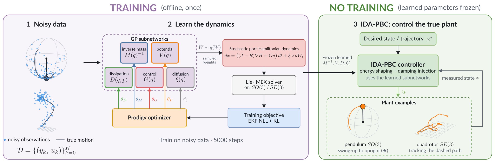
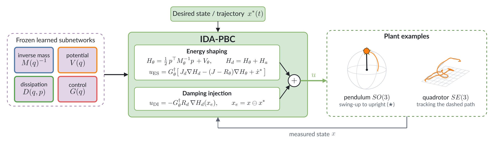
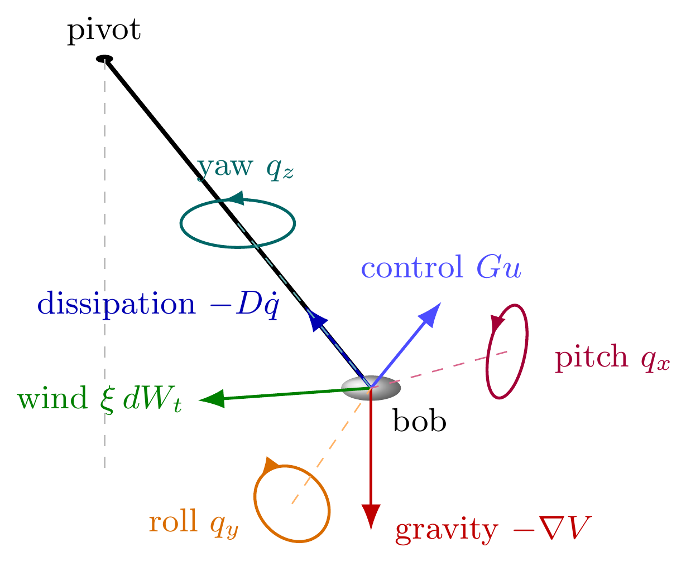
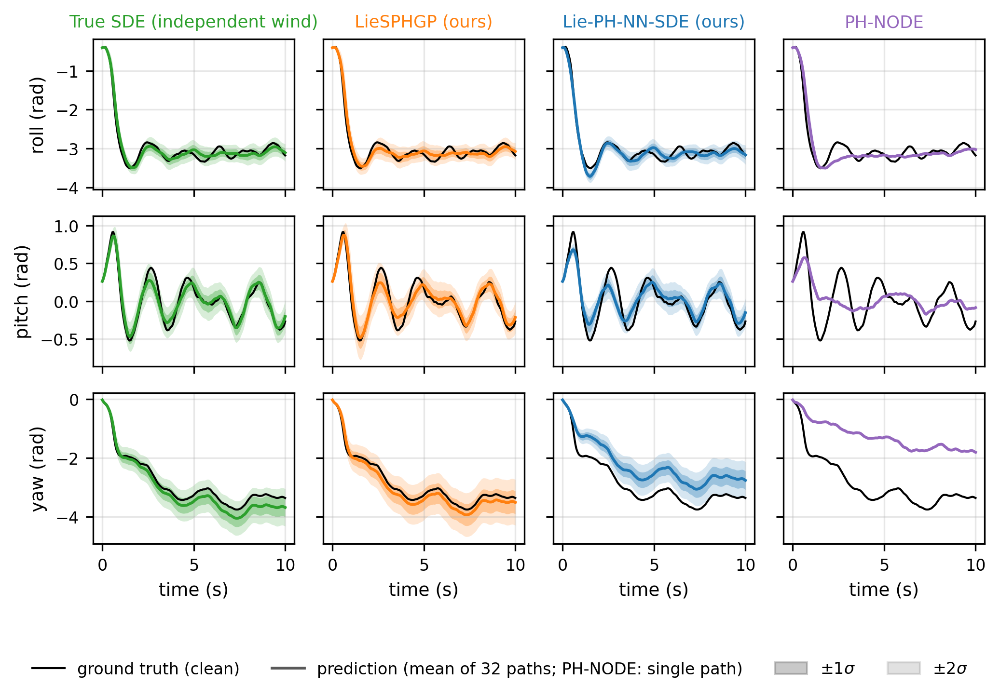
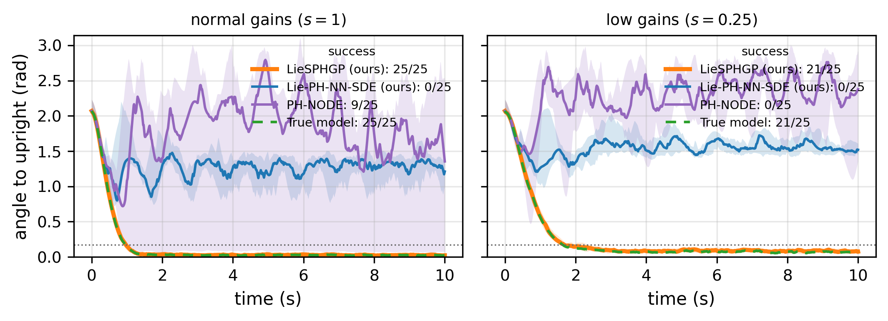
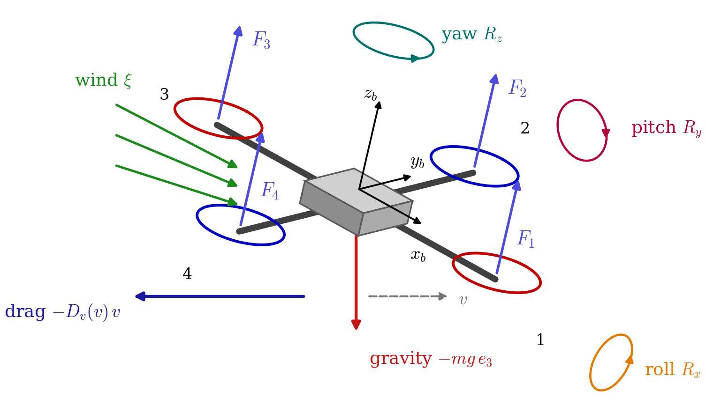
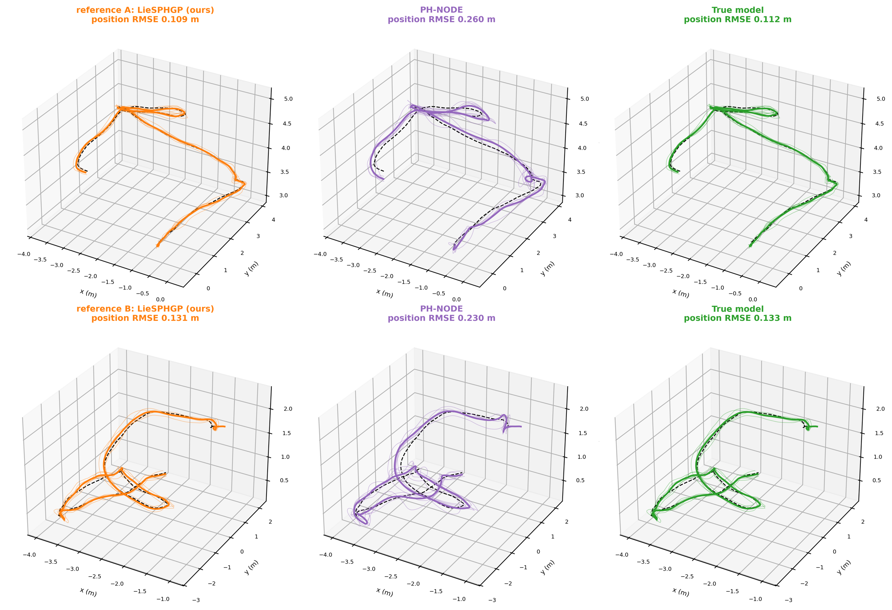
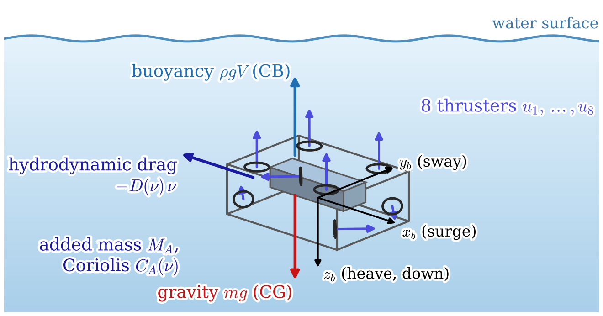
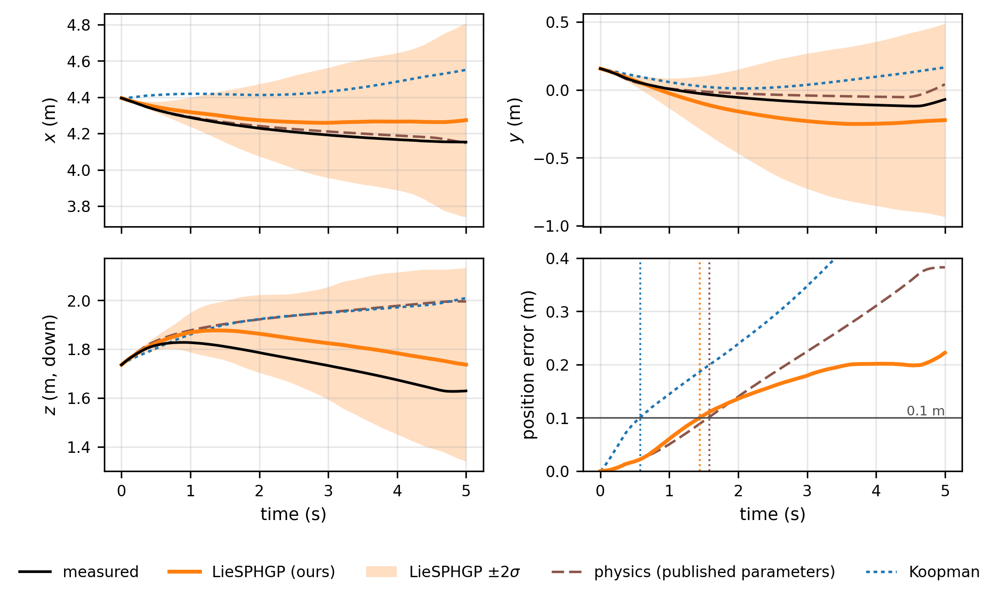
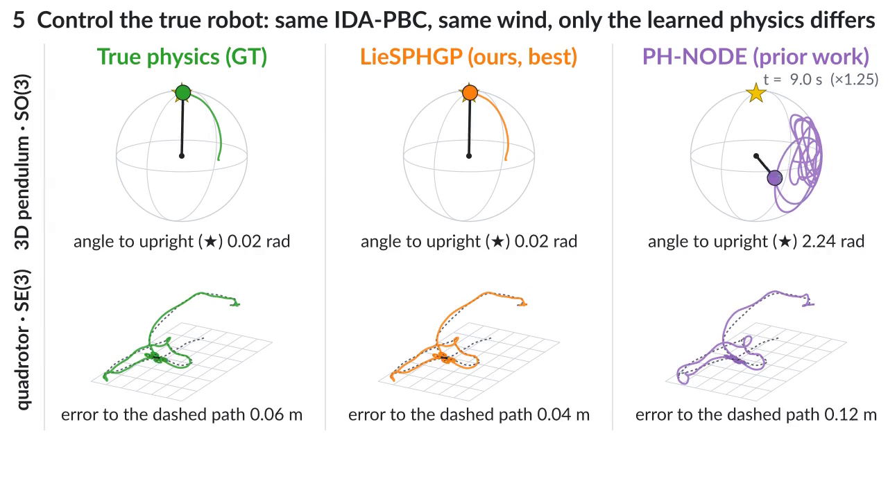

Abstract
Learning predictive models for dynamics is difficult because observations are often sparse and noisy, while the underlying dynamics evolve on nonlinear configuration manifolds and are affected by environmental dissipation and stochastic disturbances. Standard neural dynamics models can fit short-term trajectories but often violate physical structure, accumulate error over long horizons, or rely on parameterizations that introduce singularities such as gimbal lock. We introduce LieSPHGP, a stochastic Gaussian-process framework for learning rigid body dynamics with port-Hamiltonian structure and stability-aware robustness. LieSPHGP represents motion on Lie groups and Lie algebras, enabling coordinate-consistent optimization without singular parameterizations. Learned mass, potential energy, dissipation, and control components retain physical roles; a separate diffusion term represents stochastic forcing. Each component is modeled by Matérn kernel Gaussian processes which capture uncertainty induced by noisy observations. To improve physical validity, Lie group exponential map updates preserve rotational constraints, while positive-definite damping ensures nonnegative deterministic energy dissipation. The implicit-explicit integrator additionally provides unconditional stability for the frozen linear damping subsystem. The resulting model learns predictive dynamics that are robust to noise, respect rigid body geometry, and capture both intrinsic motion and environmental dissipation. Experiments on various noisy rigid body benchmarks show improved prediction accuracy, stronger long-horizon stability, and better satisfaction of manifold constraints compared with neural dynamics baselines.
Method

The state $x=(q,p)$ lives on a Lie group ($SO(3)$ for attitude, $SE(3)$ for pose). We model it with a stochastic port-Hamiltonian SDE in Stratonovich form,
where $J$ is the canonical structure, $R\succeq 0$ the dissipation, $G$ the control matrix and $\xi$ the diffusion. Every unknown term, $M^{-1}$, $V$, $R$, $G$ and $\xi$, is its own Gaussian-process subnetwork, so each one keeps its physical meaning and its own uncertainty.
Stochastic port-Hamiltonian model on Lie groups
A learned diffusion term models stochastic forcing such as wind separately from measurement noise and from uncertainty in the learned physics.
Lie-IMEX integrator
Exponential-map updates keep rotations exactly on the group. The learned damping is treated implicitly, which is unconditionally stable for the frozen linear damping step even when the learned damping is stiff.
GP subnetworks + Lie-group EKF
Matérn random-Fourier-feature GPs with a variational weight posterior. They are trained jointly through a differentiable extended Kalman filter that accounts for both process and observation noise.
From learned physics to control

Windy 3D pendulum
A rigid 3D pendulum on $SO(3)$ is pushed by stochastic wind, and its states are observed with noise. LieSPHGP is the most accurate model on every accuracy, probabilistic and identification metric, in every seed. Both Lie-IMEX models keep $SO(3)$ at round-off level.


Swing-up with the learned model
Each learned model is plugged into the same IDA-PBC controller, which must swing the 3D pendulum from a random attitude up to the upright position and hold it there in the wind (25 flights: 5 start attitudes × 5 wind samples). A flight succeeds if the pendulum stays within $10^\circ$ of upright over the last 2 s of the 10 s run. Lowering the gain scale $s$ weakens the feedback, so the controller relies more on the learned model.
| normal gains ($s=1$) | low gains ($s=0.25$) | |
|---|---|---|
| True model (ground truth) | 100 % | 84 % |
| LieSPHGP (ours) | 100 % | 78 % |
| PH-NODE | 31 % | 0 % |
At normal gains, LieSPHGP ends $0.027$ rad from upright, almost the same as the true model's $0.024$ rad.

Quadrotor in stochastic wind
A Crazyflie-type quadrotor in PyBullet with stochastic wind. Each learned model drives the same geometric tracking controller with an IDA-PBC attitude loop, whose commands go to the four rotors of the true plant. The models fly $10$ held-out $10$ s reference paths, each with $5$ wind samples.

| position RMSE (m) | velocity RMSE (m/s) | valid tracking time (s) | |
|---|---|---|---|
| True model (ground truth) | 0.127 | 0.464 | — |
| LieSPHGP (ours) | 0.133 | 0.485 | 9.22 |
| PH-NODE | 0.251 | 0.856 | 8.39 |
Valid tracking time: how long the flight stays close to the true-model controller's flight in the same wind (at most $10$ s).

BlueROV2 underwater vehicle
Real BlueROV2 Heavy recordings from the Marinarium dataset, with a pilot in the loop. The physics baseline is given the vehicle's published mass, added mass, damping, restoring forces and thruster map. LieSPHGP learns $M^{-1}$, $V$, $D$ and $G$ from the recorded trajectories alone.

| state RMSE after 0.2 s | state RMSE after 2 s | valid prediction time (s) | |
|---|---|---|---|
| Physics (published parameters) | 0.128 | 0.301 | 1.62 |
| Koopman (EDMDc) | 0.126 | 0.259 | 0.81 |
| LieSPHGP (ours) | 0.105 | 0.252 | 1.98 |
State RMSE: error over all 12 state variables (position, Euler angles, linear and angular velocity), predicted from each test sample with the recorded thruster commands. Valid prediction time: how long the position error stays below $0.1$ m (mean over $15$ held-out $10$ s segments). Lower RMSE and longer valid time are better.

Explore the results
Replay the paper's runs in your browser: a 3-D view of the 3D pendulum swing-up and open loop and of the quadrotor tracking flights, with live error, energy and $SO(3)$ plots for every flight and wind seed.
Open the interactive explorer →
BibTeX
@misc{rapolu2026liesphgp,
title = {Stochastic Port-Hamiltonian Gaussian Processes for Learning from Noisy Dynamics on Lie Groups},
author = {Rapolu, Thribhuvan and McLennan, Luke and Bajaj, Chandrajit},
year = {2026},
eprint = {XXXX.XXXXX},
archivePrefix = {arXiv},
primaryClass = {cs.LG}
}